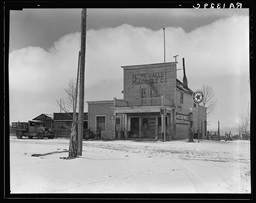

A ghost town in Garfield County, Utah, United States. It is located in John's Valley, northeast of Bryce Canyon and along the Sevier River at the mouth of Sweetwater Creek. A small number of settlers arrived in the area in 1876 and it became a town around 1908 after farmer Jedediah Adair was followed by a more significant population. Initially known as Adairville, after Adair, the town later became Houston and Winder, before attaining its final name after John A. Widtsoe, the president of and an agricultural scientist at the University of Utah. The population declined significantly from 1920 following droughts, and the town emptied in 1936. Most buildings were demolished shortly afterwards. This photograph by Dorothea Lange shows Widtsoe's Emery Valley Mercantile Co. grocery store in 1936.
 In 1925 the Forest Service office was moved away, and Widtsoe went into serious decline. By 1930 the population had dropped to 210, and in 1935 there were only 17 families left in town. In 1936 the federal Resettlement Administration stepped in to buy out local landowners, freeing them from unproductive land and delinquent taxes. The intention was to relocate inhabitants to more productive areas and use the land as a public grazing area. Unfortunately, the administration was inefficient and slow. The cost of administering the program was more than twice the amount paid out to purchase the land, and transactions that were supposed to last weeks took many months. Finally Widtsoe was emptied out. Government workers tore down most of the buildings and placed over 26,000 acres under the provisions of the Taylor Grazing Act. A few houses and an old community building still stand on the site.